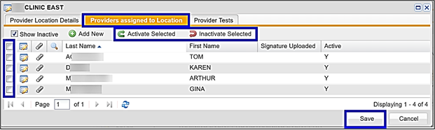

Displays users/calendar views assigned to a location/clinic. You can add New, Activate or Inactivate Providers to a location/clinic. Users are defined as Providers, Clinicians and Event/Flu Crew.
This is a two-step process within the Providers Assigned to Location. For a 1-step process go to the User Maintenance section and follow the steps to add a Provider/Clinician.
This has added the provider/clinician to the Provider Location. To give the clinician a username, password and select the User Roles you must set them up under the User Maintenance option.
| Enter user’s work email address | |
| Password | Password must be 8–30 characters and must include 1 upper case letter, 1 lower case letter, 1 numeric and 1 of these special characters: ! @ # $ % ^ & * ( ) |
| Confirm Password | Must match the password entered in the field above |
| Description | Leave blank |
| First Name | Required |
| Last Name | Required |
| Suffix/Credentials | Enter credentials |
| Phone | Phone number |
| Date of Birth | Date of birth |
| Allow Assignment for Correspondence | Yes – For Provider/EHS Manager/Clinicians – To allow the user to assign Tasks and/or Correspondence to themselves or other users |
| Event | Leave blank |
User Roles – select the User Roles that correspond with the position of the user:
| User Roles | Information |
| C3 Role | Creates tab for Product Control, Mass Email and Initialize Programs |
| Case Management | Creates tab for Case Management/WC |
| Client Admin | Tab for EHS Super User only - ReadySet can only give this function |
| EHS Manager | Creates tab for EHS Managers/Clinicians daily processes |
| Event Reviewer | Creates tab for Event/Flu Crew with limited access to program(s) they are providing services for (e.g. flu vaccinations) |
| Help Desk | Creates tab for Help Desk password assistance |
| Incident | Creates tab for Incident Mgmt. – Contracted module |
| Lab Results | Creates tab for Lab Results review |
| Participant | Creates tab for My Health |
| Recruiter | Creates tab for Recruiters/HR |
| Report Runner | Creates tab for Reports (contains PHI information) |
| Reports Only – Admin | Do not use – available upon request |
| Reports Only – Billing | Do not use – available upon request |
| Reports Only – Clinical | Do not use – available upon request |
| Reports Only - Management | Do not use – available upon request |
| Supervisor | Creates tab for Supervisors |
User Groups – leave blank
User Clients – will display the client site for this user
This completes the process for setting up the user in Provider Location and User Maintenance.
The following steps show how to inactivate a Provider, Clinician or Event/Flu Crew user.

The following steps show how to activate a selected Provider, Clinician or Event/Flu Crew user.